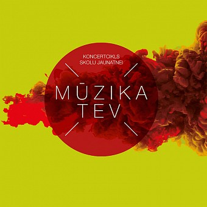
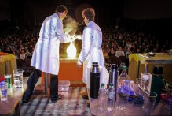
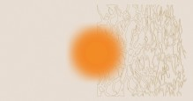

Koncerti
Mūzika Tev. Roka uz pulsa
Jaudīgs sezonas noslēguma koncerts ar Latvijā aktuālākajiem un iemīļotākajiem mūziķiem. Koncertā piedalās Shipsea ar draugiem, grupa “Sudden Lights” un dziedātāja KATŌ. Koncerts norisināsies Dzintaru koncertzālē. Laiks vēl tiks precizēts.
18. maijs 12:00, 14:00 Jūrmalā, Dzintaru Mazajā zālē € 6

Bērnu pasākumi
Zinātniskā teātra Laboratorium.lv izrāde 'Skaņas noslēpumi' (krievu valodā)
Unikāli zinātniskie šovi. Tie sajūsmina, paplašina redzesloku, atklāj zinātni pavisam neierastā gaismā un ļauj to iemīlēt. Uzvedumos vadītāji kopā ar skatītājiem interaktīvos eksperimentos izpēta konkrētu ķīmijas vai fizikas tēmu. Izprast zinātnes likumus visvienkāršāk ir eksperimentējot. Bērni, kuri regulāri nāk pie mums, arvien vairāk sāk interesēties par zinātni un jaunām zināšanām. Arī pieaugušos šie uzvedumi neatstāj vienaldzīgus un mudina uzzināt vēl nezināmo. Izrāde paredzēta bērniem 6 - 13 gadu vecumā. Mūsu zinātniskie šovi ir saistoši visiem - gan vecākiem, gan vectētiņiem un vecmāmiņām, droši nāciet ar ģīmeni! (biļēti ir jāperk arī pieaugušiem).
Zinātnes zona, Liepājas ielā 34 (ieeja no pagalma), Liepājas iela 34 Otrdiena, 21. februāris, 17:00

Virtuālie pasākumi
Meditācijas telpa: nodarbība "Kas ir laba dzīve. Skats no Ķīnas. Laodzi"
22. februārī plkst. 18.00 tiešsaistē Zoom platformā notiks Mārča Auziņa vadīta nodarbība "Kas ir laba dzīve. Skats no Ķīnas. Laodzi". Dalība bez maksas. Ko mūsdienu "lielpilsētas iedzīvotājs" var mācīties no Senās Ķīnas klasiķiem? Divu nodarbību ciklā otrā saruna par Laodzi. Latvijas Universitātes profesors, kvantu fiziķis Mārcis Auziņš ir pieredzējis meditācijas praktiķis, kurš savu meditācijas praksi ir apguvis un pilnveidojis pie dažādu tradīciju skolotājiem ASV, Ķīnā u. c.
Latvijas Nacionālā bibliotēka, Mūkusalas iela 3, Rīga, LV-1048 Trešdiena, 22. februāris, 18:00

| Pasākums | Cena (aptuveni) |
|---|---|
| Klasiskās koncerti | 6 eiro |
| Bērnu pasākumi | 15 eiro |
| Virtuālie pasākumi | 9 eiro |